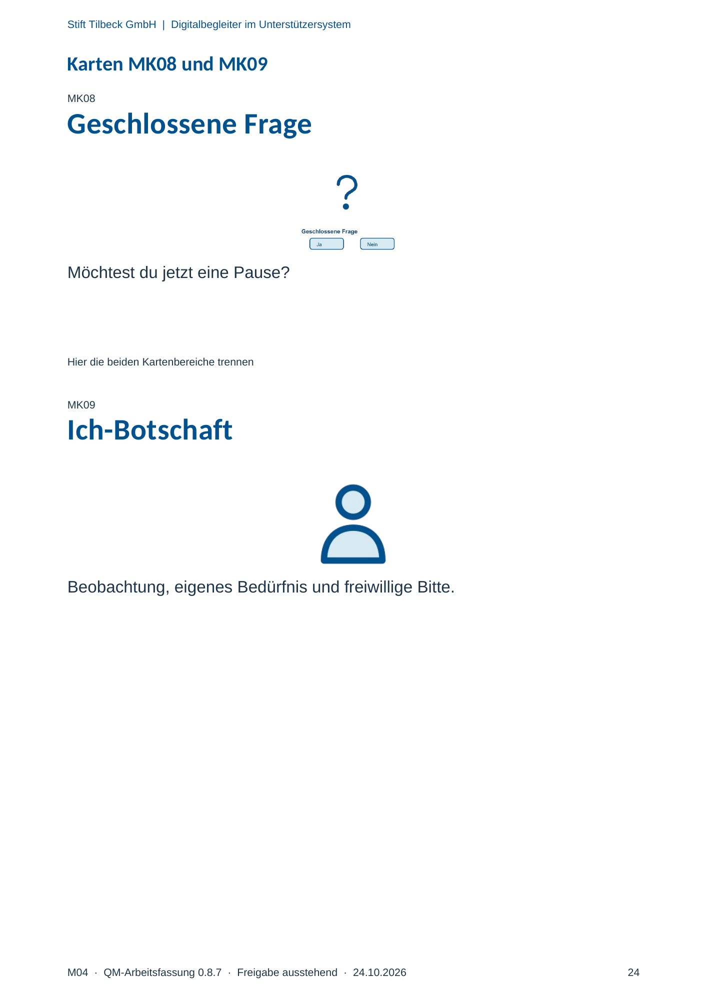

M04 · Originalseite 24
Ich-Botschaft
Original-Druckseite mit MK09. Auf derselben Seite stehen außerdem MK08. Diese sind dadurch keine zusätzliche Aufgabe.
Fragen und Ankreuzfelder werden auf dem Ausdruck bearbeitet. Die Lesefassung speichert keine Antworten.
Lesefassung · Seite 24
Stift Tilbeck GmbH | Digitalbegleiter im Unterstützersystem
M04 · QM-Arbeitsfassung 0.8.7 · Freigabe ausstehend · 24.10.2026 24
Karten MK08 und MK09
MK08
Geschlossene Frage
Möchtest du jetzt eine Pause?
Hier die beiden Kartenbereiche trennen
MK09
Ich-Botschaft
Beobachtung, eigenes Bedürfnis und freiwillige Bitte.
Originalseite ansehen
